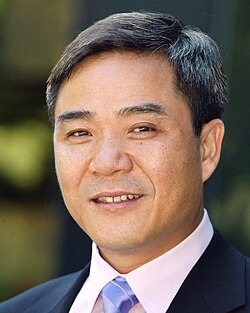

Jianqing Fan | |
|---|---|
| 范剑青 | |
 | |
| Born | 1962 (age 63–64) |
| Education | Fudan University (BS) University of California, Berkeley (PhD) |
| Awards | COPSS Presidents' Award (2000) Guggenheim Fellow (2009) Academician (2012) Guy Medal in Silver (2014) |
| Scientific career | |
| Fields | Statistics |
| Institutions | Princeton University Fudan University University of North Carolina Academia Sinica |
| David Donoho, Peter Bickel | |
Other academic advisors | Peter Bickel |
Doctoral students | |
Jianqing Fan (Chinese: 范剑青; pinyin: Fàn Jiànqīng; born 1962) is a Chinese statistician, econometrician, and data scientist. He is a professor of operations research and financial engineering, a professor of statistics and machine learning, and the Frederick L. Moore Professor of Finance at Princeton University. He was the chairman of the Department of Operations Research and Financial Engineering at Princeton from 2012 to 2015 and the director of its Committee of Statistical Studies from 2005 to 2017.
Fan is a co-editor of Journal of the American Statistical Association (since 2023) and a department of finance editor of Management Science (since 2026). He was the co-editor of The Annals of Statistics (2004–2006), a co-editor of Econometrics Journal (2007–2012), a co-editor and managing editor of Journal of Econometrics (2012–2018), co-editor of Journal of Business & Economic Statistics (2018–2021) and an editor of Probability Theory and Related Fields (2003–2005), as well as a member of the editorial boards of journals including the Journal of the American Statistical Association, Annals of Statistics, Econometrica, Management Science and Journal of Financial Econometrics. He has served as President of the Institute of Mathematical Statistics (2006–2009), and as President of the International Chinese Statistical Association (2008–2010).
After receiving his Ph.D. in Statistics from the University of California, Berkeley in 1989, he joined the statistics faculty at the University of North Carolina at Chapel Hill (1989–2003) and the University of California at Los Angeles (professor, 1997–2000). He was then appointed Professor of Statistics and Chairman at the Chinese University of Hong Kong (2000–2003), and as a professor of Operations Research and Financial Engineering (2003–) and Frederick L. Moore '18 Professor in Finance (2006–) at Princeton University. He directed the Committee of Statistical Studies at Princeton (2005–2017) and chaired the Department of Operations Research and Financial Engineering (2012–2015).
He has coauthored four well-known books–Local Polynomial Modeling (1996), Nonlinear time series: Parametric and Nonparametric Methods (2003), Elements of Financial Econometrics (2015), and Statistical Foundations of Data Science (2020)–and a monograph Spectral Methods for Data Science: A Statistical Perspective, and authored or coauthored over 300 articles on high-dimensional statistics, machine learning, AI, finance, economics, computational biology, neural networks, semiparametric and non-parametric modeling, nonlinear time series, survival analysis, longitudinal data analysis, and other aspects of theoretical and methodological statistics and machine learning.
He has received various awards in recognition of his work on statistics, financial econometrics, and computational biology. These include the 2000 COPSS Presidents' Award, and an invitation to speak at the 2006 International Congress of Mathematicians. In 2026, Fan was elected to the U.S. National Academy of Sciences.
Fan has many affiliations within Princeton University and worldwide. He has been on the scientific advisory boards at various institutions, including the Institute of Economics, Academia Sinica[1] (08–19), Academia Sinica, Statistical and Applied Mathematical Sciences Institute[2] (08–14), and Institute for Mathematical Sciences (11–16) at National University of Singapore.
{{cite web}}: CS1 maint: deprecated archival service (link)
{{cite web}}: CS1 maint: deprecated archival service (link)
{kind=link}